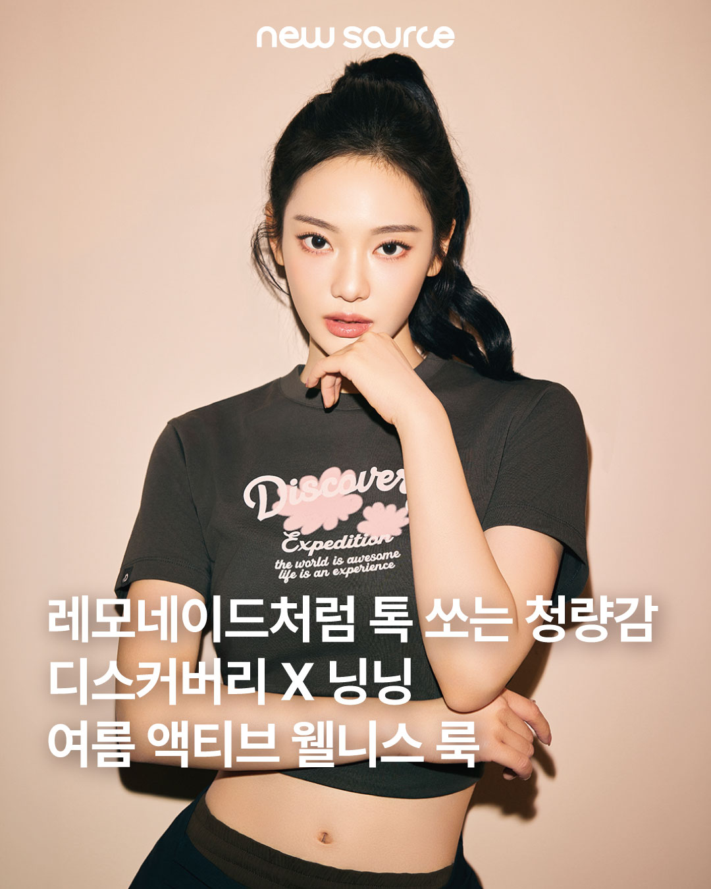

리센느 화보 촬영 캠페인
디스커버리
- 입력할 내용
- 기획·매체 협의·촬영·검수 중 직접 역할,
촬영일·발행일과 대표 화보
MEDICUBE APPLICATION / PORTFOLIO 2026
매체별 소재 기획부터 셀러브리티 캠페인,
행사 운영과 발행 후 분석까지 연결합니다.

닝닝 26SS / 유료 매체 콘텐츠
발행 이미지 · 목업 재구성닝닝 26SS / 유료 매체 콘텐츠
발행 이미지 · 목업 재구성영상 추가 예정
영상은 추후 추가 예정
구성 예시 · 미디어 추가 예정영상은 추후 추가 예정
구성 예시 · 미디어 추가 예정FROM MESSAGE TO MEDIA
같은 제품과 인물도 매체가 주목하는 소재는 다릅니다. 소비자의 관심사와 채널 특성을 읽고, 콘텐츠의 방향을 정리해 실행 조건을 조율해 왔습니다.
01 / RECENT PROJECTS
2026.10.23 / DISCOVERY
코사이어티 서울숲에서 열린 변우석 초청 프로젝트.
최근 수행 기록을 시작으로, 직접 담당한 업무와 결과물을 보완하고 있습니다.
행사 장면과 인물 콘텐츠를
분리해 보여주는 구성입니다.
영상 추가 예정
행사 현장 영상 추가 예정
구성 예시 · 미디어 추가 예정행사 현장 영상 추가 예정
구성 예시 · 미디어 추가 예정이미지 추가 예정
인물·제품 이미지 추가 예정
구성 예시 · 미디어 추가 예정인물·제품 이미지 추가 예정
구성 예시 · 미디어 추가 예정보완할 내용본인이 결정한 사항, 조율한 내용, 직접 수행한 단계와 공개 가능한 결과
2026.09.19 / DISCOVERY
행사 커뮤니케이션과 현장 콘텐츠를 연계하고,
현장·소셜·자사몰·상품 반응을 함께 검토했습니다.
ON-SITE → INSTAGRAM
콘텐츠 형식을 살펴볼 수 있는 구성 예시입니다.
실제 영상·이미지는 이후 교체합니다.
영상 추가 예정
러닝·행사 스케치 영상 영역
구성 예시 · 미디어 추가 예정러닝·행사 스케치 영상 영역
구성 예시 · 미디어 추가 예정이미지 추가 예정
제품과 현장 이미지 영역
구성 예시 · 미디어 추가 예정제품과 현장 이미지 영역
구성 예시 · 미디어 추가 예정이미지 추가 예정
스토리 이미지 또는 영상 영역
구성 예시 · 미디어 추가 예정스토리 이미지 또는 영상 영역
구성 예시 · 미디어 추가 예정보완할 내용빌리 콘텐츠의 실제 발행 채널과 기획·촬영·검수·발행 중 직접 맡은 단계
RECENT SHOOTING PROJECTS
수행 월과 프로젝트 참여가 확인된 기록입니다.
직접 맡은 역할과 대표 결과물은 보완 예정입니다.
디스커버리
디스커버리
2026.04.28 / DISCOVERY
Discover My Active Summer · 성수 쎈느
공간과 콘텐츠에 같은 메시지가 반영되도록 조율했습니다.
02 / MEDIA CONTENTS · 2026 SS
닝닝 유료 디지털 매거진 콘텐츠.
브랜드의 메시지를 유지하면서 각 매체의 관심사에 맞춰 소재를 나눴습니다.
여름 액티브 웰니스와 시즌 무드
발행 이미지 · 목업 재구성여름 액티브 웰니스와 시즌 무드
발행 이미지 · 목업 재구성
슈즈와 스타일링을 콘텐츠의 중심에
발행 이미지 · 목업 재구성슈즈와 스타일링을 콘텐츠의 중심에
발행 이미지 · 목업 재구성
인물과 계절의 관심사를 연결한 소재
발행 이미지 · 목업 재구성인물과 계절의 관심사를 연결한 소재
발행 이미지 · 목업 재구성뉴소스는 여름 시즌의 무드와 브랜드 이미지를 전달하는 소재로 기획했습니다.
아이즈매거진은 메리제인 슈즈와 착장에 관심이 모이도록 소재를 구성했습니다.
패스트페이퍼는 팬덤과 여름 관심사를 연결하는 소재로 방향을 잡았습니다.
시장·키워드 분석 → 매체별 콘텐츠 방향 결정 → 집행 조건·일정 협의 → 노출·상품 반응 검토
보완할 내용정확한 집행일과 상품 반응의 집계 대상·기간
2024 FW / DUVETICA
김지원 앰버서더 캠페인과 더현대 서울 팝업을 연결한 브랜드 커뮤니케이션.
SERGIO TACCHINI / 진행일 확인 중
보완할 내용수행 기간, 직접 조율한 파트너와 프로모션별 결과
03 / EXECUTION & ANALYSIS
해당 집행 건별 광고 비용 절감
단가·노출 조건·일정을 협의하고,
광고 집행과 정산을 관리했습니다.
보고 준비 기간 단축
분석 요건·KPI·조회 화면을 기획하고,
데이터팀과 협업해 보고 방식을 개선했습니다.
매체 · 메시지 · 발행 형식
노출과 반응, 상품 추이 구분
콘텐츠와 시딩 방향 제안
04 / PROFILE
브랜드의 방향을 콘텐츠로 구체화하고,
매체와 유관부서 사이에서 실행을 조율해 왔습니다.
브랜드 마케터 · 대리
브랜드 전략과 콘텐츠 기획, 캠페인·행사 운영, 매체 협의와 성과 보고
프리랜서 콘텐츠 편집
유튜브 원고 편집·교정, 영상 편집과 자막 디자인, 문구 가독성 점검
프리랜서 편집 · 참고 경력
경희대학교 디지털콘텐츠학과 학사
2017.03 — 2022.02
영어 업무 커뮤니케이션 가능
OPIc IH 취득 · 2024.09
NEXT / MEDICUBE
제품의 메시지와 근거를 정리하고 매체 독자의 관심사에 맞는 피칭 소재를 준비하겠습니다.
행사·콘텐츠의 메시지와 일정을 조율하고, 발행 후 반응을 다음 제안에 반영하겠습니다.
목업의 ‘구성 예시 · 미디어 추가 예정’ 영역은 실제 발행물로 교체할 자리입니다. 좋아요·조회·팔로워 수치는 임의로 표시하지 않았습니다.